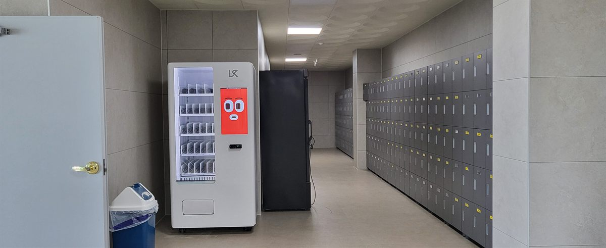
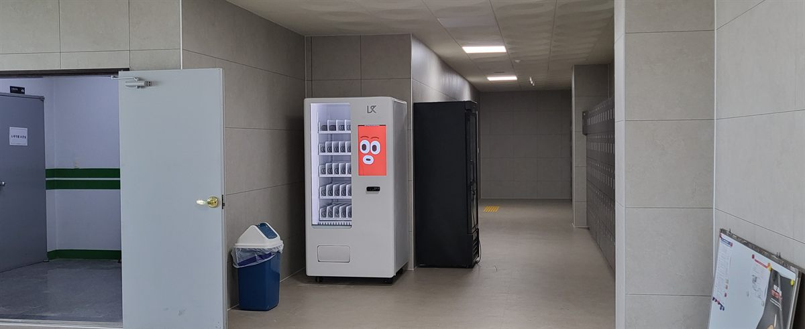
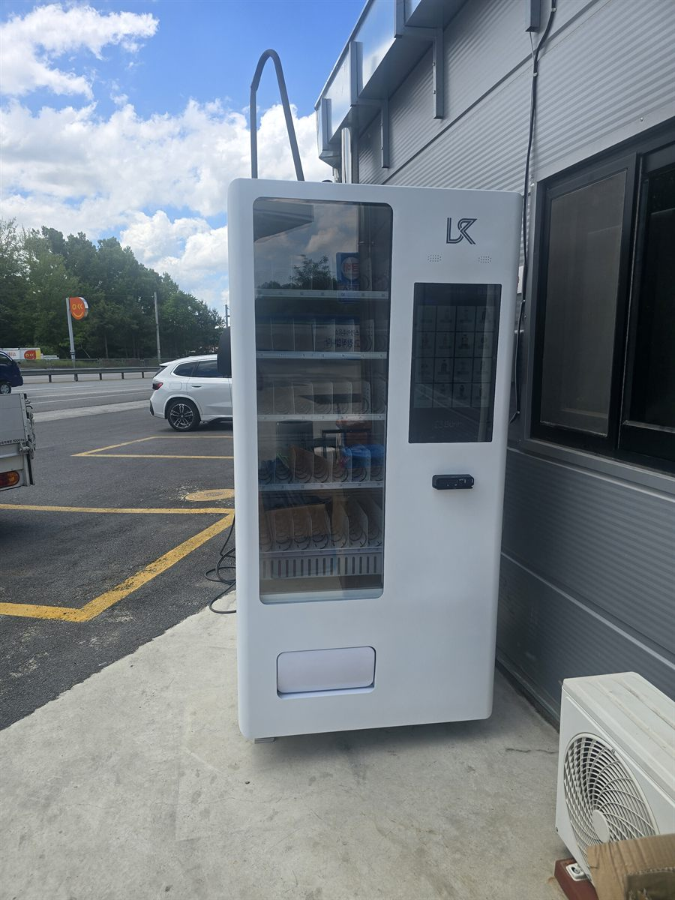
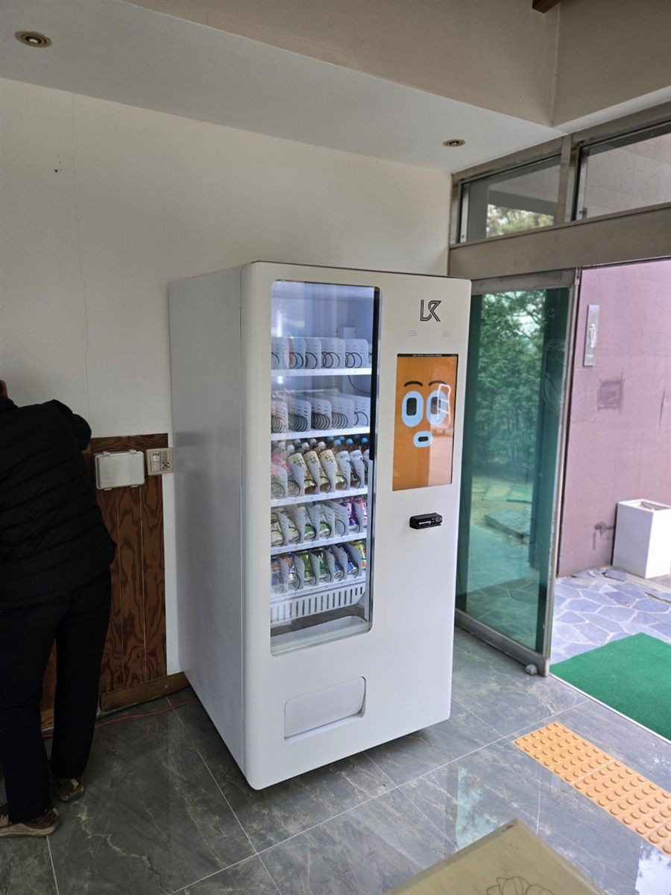

무인자판기 · 포스기 설치 후기
설치 후기
지역과 업종마다 맞는 구성이 다릅니다
골프장은 냉장 음료, 병원은 대기실 회전, 공장은 교대 시간대, 학교는 방학 공백. 같은 자판기여도 자리에 따라 세팅이 달라집니다. 실제로 설치하면서 본 것들을 사진과 함께 남깁니다.

의정부 무인자판기 설치 — 헬스장 락커 복도 24시간 냉장 자판기
운동을 마치고 락커로 들어가는 길목입니다. 락커 문이 열리는 폭을 피해 벽이 들어간 자리에 냉장 자판기를 세웠습니다.
후기 보기
경기 광주 무인자판기 설치 — 물류센터 로커실 앞 복도 24시간 냉장 자판기
교대 시간마다 전원이 한 번씩 지나는 길입니다. 대차가 오가는 통행선을 피해 벽이 들어간 자리에 냉장 자판기를 세웠습니다.
후기 보기
시흥 무인자판기 설치 — 셀프세차장 진공·에어건 구역 옆 실외 냉장 자판기
세차보다 마무리 청소에 시간이 더 걸립니다. 진공청소기와 에어 주입기가 늘어선 라인 끝 벽면에 실외 냉장 자판기 한 대를 세웠습니다.
후기 보기
파주 무인자판기 설치 — 셀프세차장 관리동 옆 실외 냉장 자판기
세차 한 번에 20분 넘게 차 옆에 머뭅니다. 부스와 떨어진 관리동 벽면 처마 아래에 실외 냉장 자판기 한 대를 세웠습니다.
후기 보기
김포 무인자판기 설치 — 주유소 사무동 옆 실외 냉장 자판기
셀프주유소에서 기름 넣는 3분이 그대로 비어 있습니다. 주유기와 떨어진 사무동 벽면 처마 아래에 실외 냉장 자판기 한 대를 세웠습니다.
후기 보기
남양주 무인자판기 설치 — 골프연습장 출입구 홀 냉장 자판기
한 타임 치고 나오면서 찬 물을 집어 가는 흐름이 가장 많은 자리입니다. 자동문 반경과 점자블록을 비켜난 출입구 홀 벽면에 냉장 자판기 한 대를 세웠습니다.
후기 보기
부천 무인자판기 설치 — 오피스텔 1층 로비 입주민용 음료 자판기
늦게 귀가하는 1인 가구가 엘리베이터 타기 전에 물 한 병 챙기는 자리입니다. 출입문 반경과 점자블록을 비켜난 로비 벽면에 냉장 자판기 한 대를 세웠습니다.
후기 보기
안산 무인자판기 설치 — 관공서 민원실 로비 대기 공간 음료 자판기
번호표를 뽑고 기다리는 시간에 음료를 찾는 사람이 몰립니다. 자동문 옆 점자블록을 비켜난 로비 벽면에 냉장 자판기 한 대를 세웠습니다.
후기 보기
화성 무인자판기 설치 — 캠핑장 관리동 입구 24시간 음료 자판기
매점이 문을 닫는 밤에 음료를 찾는 사람이 많은 자리입니다. 비와 햇빛을 피하는 관리동 입구 실내 벽면에 냉장 자판기 한 대를 세웠습니다.
후기 보기
성남 무인자판기 설치 — 도서관 로비 휴게공간 음료 자판기
오래 머무는 사람이 많은 자리입니다. 열람실과 떨어진 출입문 옆 로비 벽면에 냉장 자판기 한 대를 세우고 음료 위주로 채웠습니다.
후기 보기
용인 무인자판기 설치 — 공장 휴게실 음료·간식 냉장 자판기
교대 시간마다 사람이 몰리는 자리입니다. 휴게실 벽 콘센트 옆에 냉장 자판기 한 대를 세우고 인기 품목 칸을 넉넉히 잡았습니다.
후기 보기
수원 무인자판기 설치 — 병원 1층 대기 공간 냉장 자판기
기다리는 시간이 긴 자리입니다. 계단 옆 자투리 공간에 냉장 자판기 한 대를 세우고 품목을 생수·이온음료 위주로 잡았습니다.
후기 보기
창원 무인자판기 설치 — 학교 복도 음료·스낵 자판기 2대
쉬는 시간 10분에 줄이 몰리는 자리. 음료용·간식용으로 나눠 두 대를 놓아 회전을 갈랐습니다.
후기 보기
평택 무인자판기 설치 — 커뮤니티실 음료·스낵 자판기
사람이 잠깐 머무는 공간의 벽면에 자판기 한 대. 음료와 스낵을 24시간 무인으로 팔고 재고는 앱으로 확인합니다.
후기 보기
고양 무인자판기 설치 완료 — 컨트리클럽 클럽하우스 무인 판매대
라운딩 전후로 회전이 몰리는 자리라 냉장 음료와 이온음료 비중을 높여 세팅했습니다. 반입부터 결제 테스트까지 한나절.
후기 보기